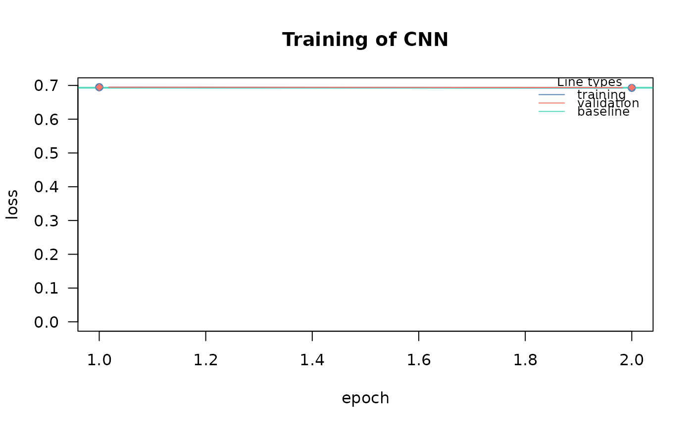
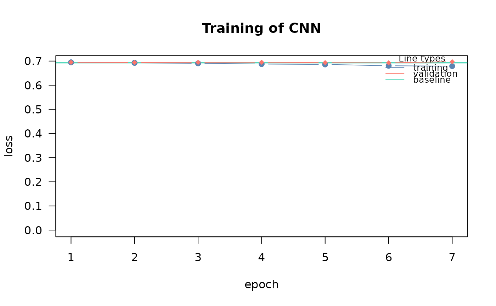
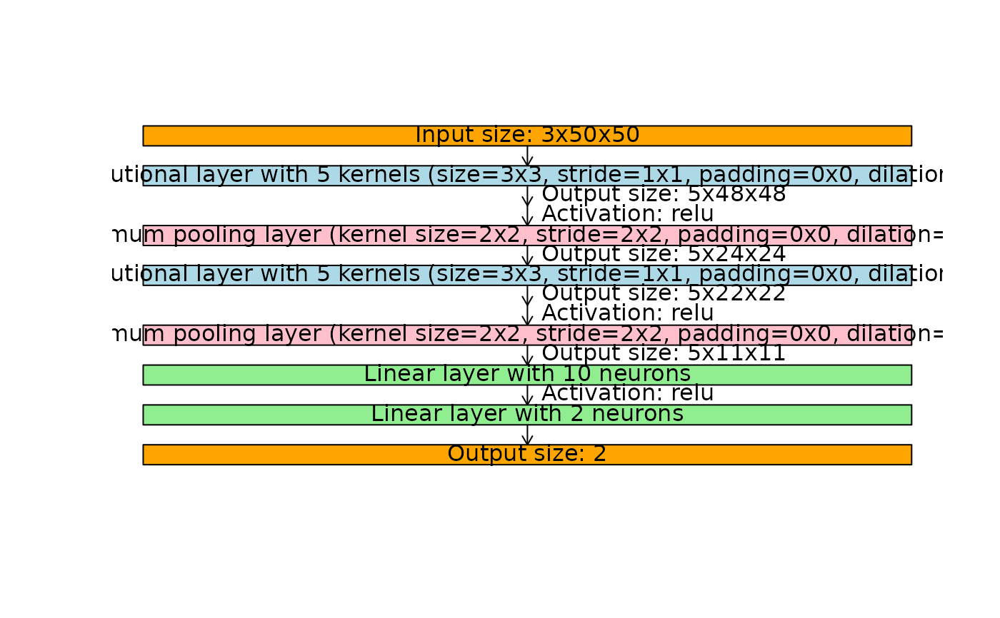
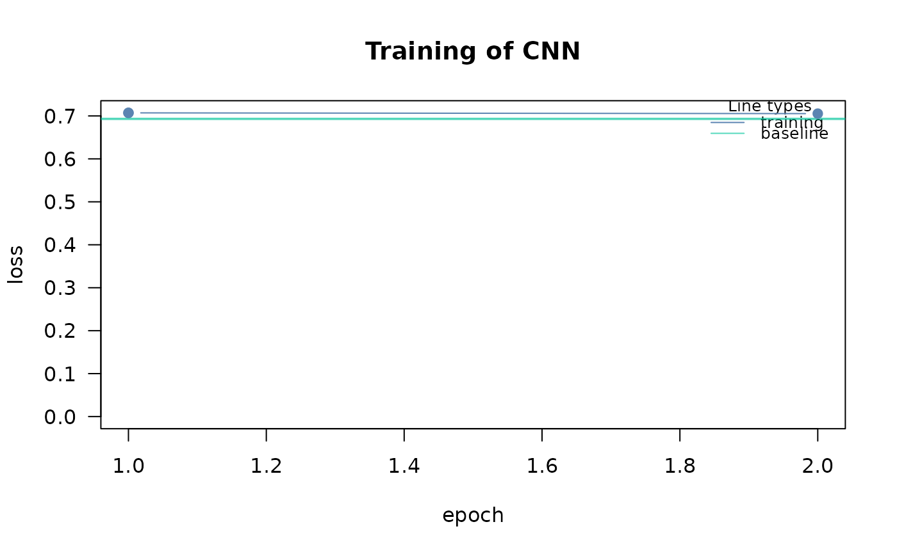
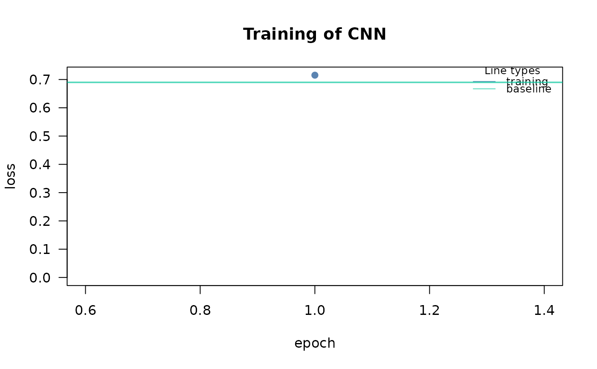
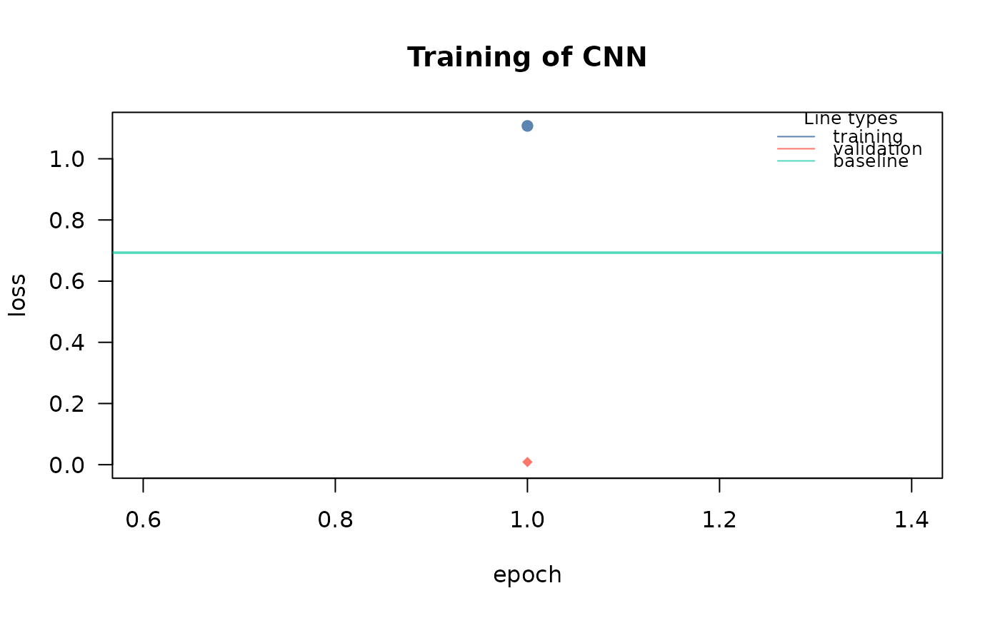
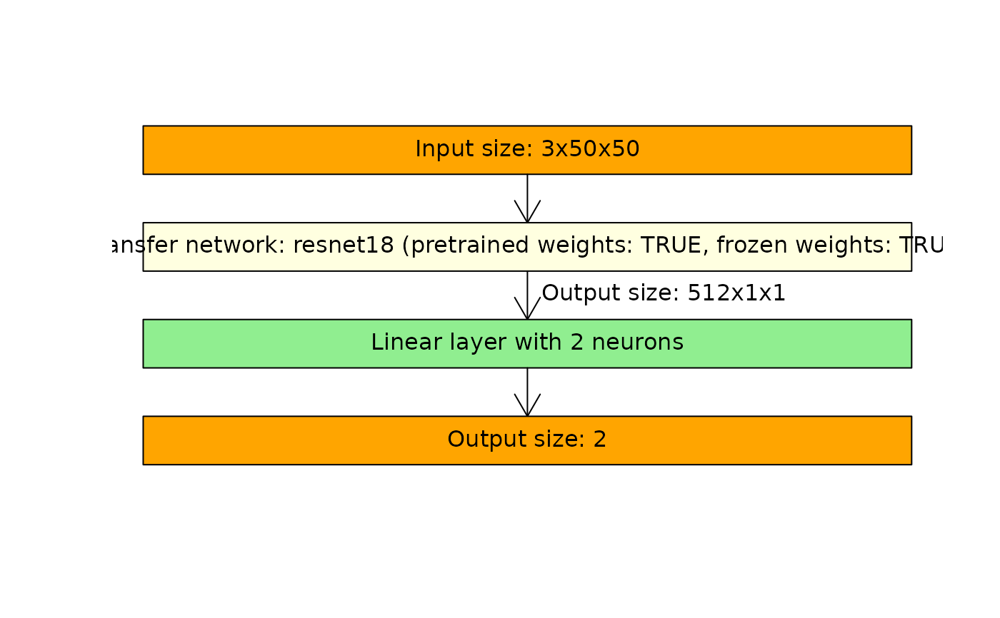

This function trains a Convolutional Neural Network (CNN) on the provided input data X and the target data Y using the specified architecture, loss function, and optimizer.
Usage
cnn(
X,
Y = NULL,
architecture = NULL,
custom = NULL,
loss = c("mse", "mae", "cross-entropy", "bernoulli", "gaussian", "binomial", "poisson",
"mvp", "nbinom", "multinomial", "clogit", "softmax"),
custom_parameters = NULL,
optimizer = c("sgd", "adam", "adadelta", "adagrad", "rmsprop", "rprop", "ignite_adam"),
lr = 0.01,
lr_scheduler = NULL,
alpha = 0.5,
lambda = 0,
validation = 0,
batchsize = NULL,
shuffle = TRUE,
data_augmentation = NULL,
num_workers = 0L,
num_threads = 4L,
epochs = 100,
weights = NULL,
early_stopping = Inf,
burnin = Inf,
baseloss = NULL,
device = c("cpu", "cuda", "mps"),
plot = TRUE,
verbose = TRUE
)Arguments
- X
An array of input data with a minimum of 3 and a maximum of 5 dimensions. The first dimension represents the samples, the second dimension represents the channels, and the third to fifth dimensions represent the input dimensions. As an alternative, you can provide the relative or absolute path to the folder containing the images. In this case, unsigned integer images are divided by their maximum value (255 for 8 bit, 65535 for 16 bit), and floating point and signed integer TIFFs are passed unchanged. Windows of one large raster are given with
raster_patches.- Y
The target data. The allowed formats of the target data differ between loss functions. See
dnnfor more information.- architecture
An object of class 'citoarchitecture'. See
create_architecturefor more information. Ignored if custom is provided.- custom
custom network architecture, replaces the architecture argument. Either an
nn_modulegenerator, an instantiated nn_module, or a list(module = generator, args = list(...), output_dim = integer). If the initialize method has arguments named input or output, they are filled in automatically (input = input shape, e.g. c(channels, height, width), output = output dimension expected by the loss). The forward method receives a float tensor of shape (batch, input_shape) and must return a tensor of shape (batch, output). Seednnfor details- loss
The loss function to be used. Options include "mse", "mae", "cross-entropy", "bernoulli", "gaussian", "binomial", "poisson", "nbinom", "mvp", "multinomial", and "clogit". You can also specify your own loss function. See Details for more information. Default is "mse".
- custom_parameters
Parameters for the custom loss function. See the vignette for an example. Default is NULL.
- optimizer
The optimizer to be used. Options include "sgd", "adam", "adadelta", "adagrad", "rmsprop", "rprop", and "ignite_adam". See
config_optimizerfor further adjustments to the optimizer. Default is "sgd".- lr
Learning rate for the optimizer. Default is 0.01.
- lr_scheduler
Learning rate scheduler. See
config_lr_schedulerfor creating a learning rate scheduler. Default is NULL.- alpha
Alpha value for L1/L2 regularization. Default is 0.5.
- lambda
Lambda value for L1/L2 regularization. Default is 0.0.
- validation
Proportion of the data to be used for validation. Alternatively, a vector containing the indices of the validation samples can be provided. Default is 0.0.
- batchsize
Batch size for training. If NULL, batchsize is 10% of the training data. Default is NULL.
- shuffle
Whether to shuffle the data before each epoch. Default is TRUE.
- data_augmentation
A list of functions used for data augmentation. Elements must be either functions or strings corresponding to inbuilt data augmentation functions. See details for more information.
- num_workers
(integer) Number of worker processes for the dataloader. Only effective for folder inputs; raster inputs from
raster_patchesalways use 0 and prefetch in a reader thread instead. 0 decodes in the main process.- num_threads
(integer) Number of threads the compiled image decoder uses per batch for folder inputs, and the number of reader threads for raster inputs from
raster_patches.- epochs
Number of epochs to train the model. Default is 100.
- weights
weights or other values (can be also a matrix) that the likelihood has access to
- early_stopping
Number of epochs with no improvement after which training will be stopped. Default is Inf.
- burnin
Number of epochs after which the training stops if the loss is still above the baseloss. Default is Inf.
- baseloss
Baseloss used for burnin and plot. If NULL, the baseloss corresponds to intercept only models. Default is NULL.
- device
Device to be used for training. Options are "cpu", "cuda", and "mps". Default is "cpu".
- plot
Whether to plot the training progress. Default is TRUE.
- verbose
Whether to print detailed training progress. Default is TRUE.
Value
An S3 object of class "citocnn" is returned. It is a list containing everything there is to know about the model and its training process.
The list consists of the following attributes:
- net
An object of class "nn_module". Originates from the torch package and represents the core object of this workflow.
- call
The original function call.
- loss
An object of class "nn_module". Contains all relevant information for the loss function, e.g. parameters and a function (format_Y) that transforms target data.
- data
A list. Contains the data used for the training of the model.
- model_properties
A list of properties, that define the architecture of the model.
- training_properties
A list of all training hyperparameters used the last time the model was trained.
- losses
A data.frame containing training and validation losses of each epoch.
- best_epoch_net_state_dict
Serialized state dict of net from the best training epoch.
- best_epoch_loss_state_dict
Serialized state dict of loss from the best training epoch.
- last_epoch_net_state_dict
Serialized state dict of net from the last training epoch.
- last_epoch_loss_state_dict
Serialized state dict of loss from the last training epoch.
- use_model_epoch
String, either "best" or "last". Determines whether the parameters (e.g. weights, biases) from the best or the last training epoch are used (e.g. for prediction).
- loaded_model_epoch
String, shows from which training epoch the parameters are currently loaded in
netandloss.
Details:
Also check dnn for details to common arguments.
Convolutional Neural Networks:
Convolutional Neural Networks (CNNs) are a specialized type of neural network designed for processing structured data, such as images. The key components of a CNN are convolutional layers, pooling layers and fully-connected (linear) layers:
Convolutional layers are the core building blocks of CNNs. They consist of filters (also called kernels), which are small, learnable matrices. These filters slide over the input data to perform element-wise multiplication, producing feature maps that capture local patterns and features. Multiple filters are used to detect different features in parallel. They help the network learn hierarchical representations of the input data by capturing low-level features (edges, textures) and gradually combining them (in subsequent convolutional layers) to form higher-level features.
Pooling layers reduce the size of the feature maps created by convolutional layers, while retaining important information. A common type is max pooling, which keeps the highest value in a region, simplifying the data while preserving essential features.
Fully-connected (linear) layers connect every neuron in one layer to every neuron in the next layer. These layers are found at the end of the network and are responsible for combining high-level features to make final predictions.
The architecture of the CNN that will be created and trained by this function is defined by an object of class 'citoarchitecture'. See create_architecture for detailed information on how to define and customize your CNN architecture.
Data Augmentation
Data augmentation is a technique used to improve the generalization of convolutional neural networks (CNNs) by increasing the diversity of the training data through random transformations. This function supports data augmentation through the data_augmentation argument, which accepts a list containing either user-defined functions or the names of cito's built-in data augmentation functions.
Each user-defined function must take a torch_tensor as input and return a torch_tensor with the same shape. The input tensor must have 3 to 5 dimensions with the following structure:
Dimension 1: singleton batch dimension (i.e., size 1),
Dimension 2: channel dimension,
Dimensions 3 to 5: spatial dimensions (e.g., X, Y, Z).
During training, the data loader re-loads each sample at every epoch, applying all provided augmentation functions sequentially each time the sample is accessed. This allows transformations to vary across epochs if the functions include randomness (e.g., randomly flipping a spatial axis) helping the model learn invariance to such changes. In addition to custom functions, the list can contain the names (as strings) of the following built-in augmentation methods:
"rotate90":For 2D convolutions: randomly applies one of the 4 possible 90° rotations. The X and Y dimensions have to be equal.
For 3D convolutions:
If X, Y, and Z dimensions are equal: randomly applies one of the 24 possible 90° rotations.
If only two spatial dimensions are equal: randomly applies one of the 4 possible 90° rotations in the plane of the two spatial dimensions.
Not available for 1D convolutions.
"flip": Randomly flips each spatial dimension independently with 50% probability."noise": Adds a small amount of normally distributed noise to the tensor.
Training and convergence of neural networks
Ensuring convergence can be tricky when training neural networks. Their training is sensitive to a combination of the learning rate (how much the weights are updated in each optimization step), the batch size (a random subset of the data is used in each optimization step), and the number of epochs (number of optimization steps). Typically, the learning rate should be decreased with the size of the neural networks (depth of the network and width of the hidden layers). We provide a baseline loss (intercept only model) that can give hints about an appropriate learning rate:

If the training loss of the model doesn't fall below the baseline loss, the learning rate is either too high or too low. If this happens, try higher and lower learning rates.
A common strategy is to try (manually) a few different learning rates to see if the learning rate is on the right scale.
See the troubleshooting vignette (vignette("B-Training_neural_networks")) for more help on training and debugging neural networks.
Examples
# \donttest{
if(torch::torch_is_installed()){
library(cito)
# Example workflow in cito
device <- ifelse(torch::cuda_is_available(), "cuda", "cpu")
## Data
### We generate our own data:
### 320 images (3x50x50) of either rectangles or ellipsoids
shapes <- cito:::simulate_shapes(n=320, size=50, channels=3)
X <- shapes$data
Y <- shapes$labels
## Architecture
### Declare the architecture of the CNN
### Note that the output layer is added automatically by cnn()
architecture <- create_architecture(conv(5), maxPool(), conv(5), maxPool(), linear(10))
## Build and train network
### cross-entropy (softmax link) for classification
cnn.fit <- cnn(X, Y, architecture, loss = "cross-entropy",
epochs = 2, validation = 0.1, lr = 0.05, device=device)
## The training loss is below the baseline loss but at the end of the
## training the loss was still decreasing, so continue training for another 5
## epochs
cnn.fit <- continue_training(cnn.fit, epochs = 5)
# Structure of Neural Network
print(cnn.fit)
# Plot Neural Network
plot(cnn.fit)
## Convergence can be tested via the analyze_training function
analyze_training(cnn.fit)
## Predictions, and the output of the last hidden layer (embeddings)
predict(cnn.fit, newdata = X[1:5,,,,drop = FALSE], type = "class")
dim(predict(cnn.fit, newdata = X[1:5,,,,drop = FALSE], return_embeddings = TRUE))
## Data augmentation: random 90 degree rotations and flips of every image,
## drawn anew in each epoch
cnn.aug <- cnn(X, Y, architecture, loss = "cross-entropy", epochs = 2,
data_augmentation = list("rotate90", "flip"), device = device)
## Images on disk: X is a folder (jpeg, png or tiff), read batch by batch
## during training, so the data do not have to fit into memory
if(requireNamespace("tiff", quietly = TRUE)) {
folder <- file.path(tempdir(), "shapes")
dir.create(folder, showWarnings = FALSE)
for(i in 1:50) {
tiff::writeTIFF(aperm(X[i,,,], c(2, 3, 1)), file.path(folder, sprintf("%03d.tiff", i)))
}
# files are matched to Y in the order of list.files(folder)
cnn.disk <- cnn(folder, Y[1:50], architecture, loss = "cross-entropy",
epochs = 1, device = device)
predict(cnn.disk, newdata = folder, type = "class")[1:5]
unlink(folder, recursive = TRUE)
}
## Windows cut from one large georeferenced raster around each observation
## are an input as well, see ?raster_patches
## Transfer learning
### With the transfer() function we can use predefined architectures with pretrained weights
transfer_architecture <- create_architecture(transfer("resnet18"))
resnet <- cnn(X, Y, transfer_architecture, loss = "cross-entropy",
epochs = 1, validation = 0.1, lr = 0.05, device=device)
print(resnet)
plot(resnet)
}
#> Loss at epoch 1: training: 0.695, validation: 0.695, lr: 0.05000

#> Loss at epoch 2: training: 0.693, validation: 0.694, lr: 0.05000
#> Loss at epoch 3: training: 0.691, validation: 0.695, lr: 0.05000

#> Loss at epoch 4: training: 0.688, validation: 0.695, lr: 0.05000
#> Loss at epoch 5: training: 0.686, validation: 0.693, lr: 0.05000
#> Loss at epoch 6: training: 0.681, validation: 0.693, lr: 0.05000
#> Loss at epoch 7: training: 0.679, validation: 0.697, lr: 0.05000
#> cnn(X = X, Y = Y, architecture = architecture, loss = "cross-entropy",
#> lr = 0.05, validation = 0.1, epochs = 2, device = device)
#> -------------------------------------------------------------------------------
#> Convolution|Input: 3x50x50
#> |Output: 5x48x48
#> |Kernel: 3x3 (stride=1x1, padding=0x0, dilation=1x1)
#> |Bias: TRUE
#> |Activation: relu
#> -------------------------------------------------------------------------------
#> MaxPool |Input: 5x48x48
#> |Output: 5x24x24
#> |Kernel: 2x2 (stride=2x2, padding=0x0, dilation=1x1)
#> -------------------------------------------------------------------------------
#> Convolution|Input: 5x24x24
#> |Output: 5x22x22
#> |Kernel: 3x3 (stride=1x1, padding=0x0, dilation=1x1)
#> |Bias: TRUE
#> |Activation: relu
#> -------------------------------------------------------------------------------
#> MaxPool |Input: 5x22x22
#> |Output: 5x11x11
#> |Kernel: 2x2 (stride=2x2, padding=0x0, dilation=1x1)
#> -------------------------------------------------------------------------------
#> Linear |Input: 605
#> |Output: 10
#> |Bias: TRUE
#> |Activation: relu
#> -------------------------------------------------------------------------------
#> Linear |Input: 10
#> |Output: 2
#> |Bias: TRUE
#> |Activation: Depends on loss
#> -------------------------------------------------------------------------------

#> Loss at epoch 1: 0.707142, lr: 0.01000

#> Loss at epoch 2: 0.705377, lr: 0.01000
#> Loss at epoch 1: 0.715356, lr: 0.01000

#> Model weights for <resnet18> (~45 MB) will be downloaded and processed if not
#> already available.
#> Loss at epoch 1: training: 1.107, validation: 0.009, lr: 0.05000

#> cnn(X = X, Y = Y, architecture = transfer_architecture, loss = "cross-entropy",
#> lr = 0.05, validation = 0.1, epochs = 1, device = device)
#> -------------------------------------------------------------------------------
#> Transfer |Input: 3x50x50
#> |Output: 512x1x1
#> |Network: resnet18
#> |Pretrained: TRUE
#> |Weights frozen: TRUE
#> -------------------------------------------------------------------------------
#> Linear |Input: 512
#> |Output: 2
#> |Bias: TRUE
#> |Activation: Depends on loss
#> -------------------------------------------------------------------------------

# }